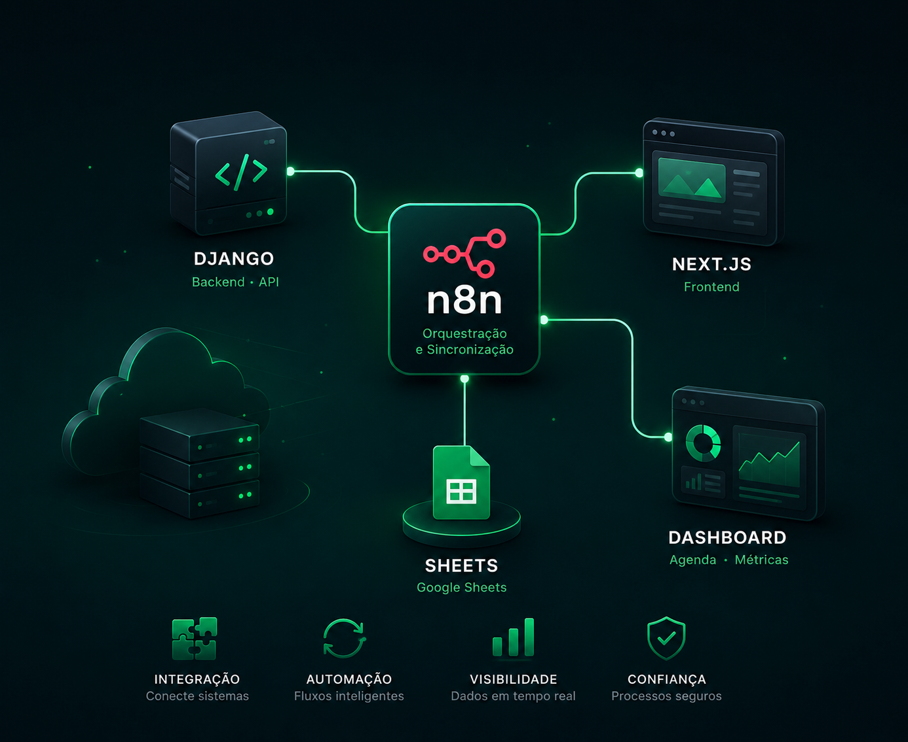
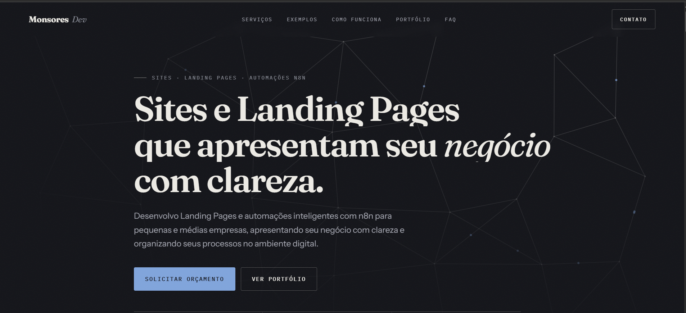
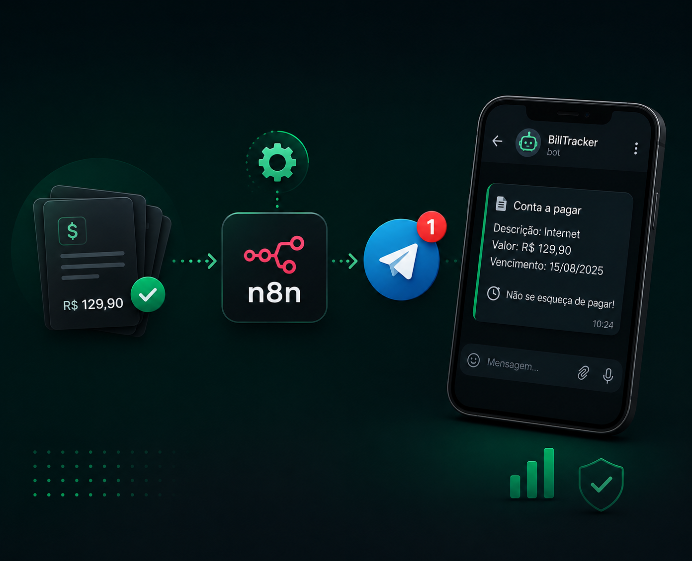

SOFTWARE DEVELOPER · PORTFÓLIO 2026
Arthur Monsores
Aplico IA, construo automações e dashboards de BI que transformam fluxos de trabalho em valor real.
Sobre
Trabalho com automação de processos usando n8n, integração de agentes de IA (como Claude) em fluxos de trabalho, backend com Django e PostgreSQL e Business Intelligence com Power BI e Metabase. Meu foco é transformar processos manuais em fluxos automatizados que geram valor real com dados.
Atuação atual Atualmente atuo como desenvolvedor na Interligados Soluções em Tecnologia (Rio de Janeiro), com foco em Business Intelligence, testes de funcionalidades e desenvolvimento com apoio de IA aplicado a sistemas de negócio.
-
IA aplicada
Integração e uso prático de LLMs em automações e sistemas de negócio
-
Automação
Fluxos com n8n, integrações entre APIs e sistemas
-
Business Intelligence
SQL, PostgreSQL, Power BI, Metabase e análise de dados
- Python
- Django
- PostgreSQL
- SQL
- n8n
- Docker
- Power BI
- Metabase
- JavaScript
Projetos principais

Agenda Inteligente
Agendamento com dashboard web via Docker Compose: API em Django, dashboard em Next.js e n8n orquestrando a automação e sincronizando dados com Google Sheets

Monsores Dev
Meu site de vendas e automação

BillTracker Automation
Monitoramento de contas a pagar com alertas via Telegram — em produção no VPS
Dashboard Investimentos
Views analíticas em PostgreSQL consumidas pelo Power BI
SQL Documentation
Estudo completo de SQL e PostgreSQL com exemplos práticos
Outros trabalhos
Vamos construir
algo juntos?
Disponível para oportunidades, colaborações e projetos.